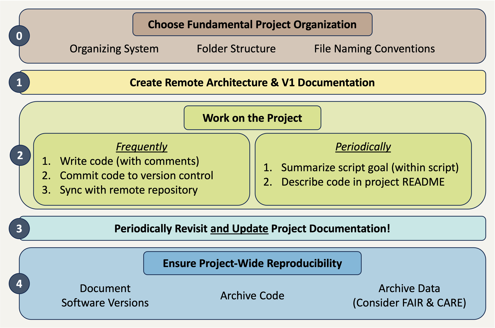
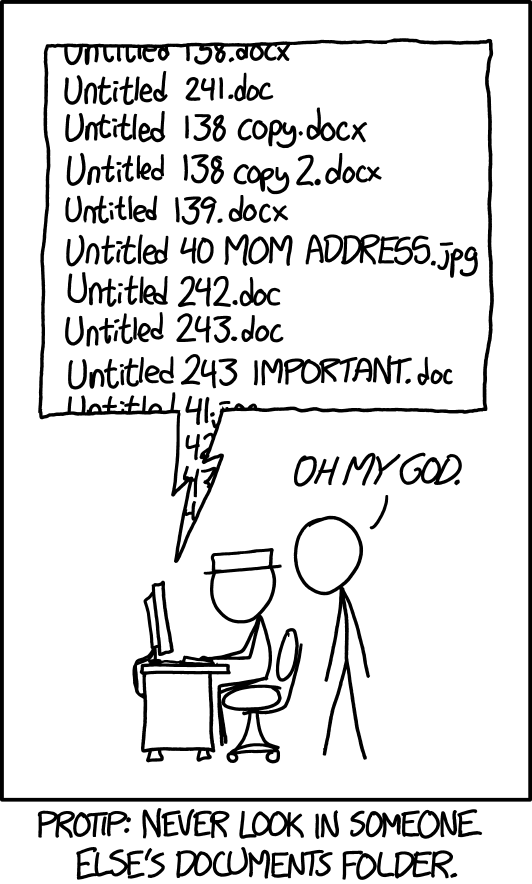
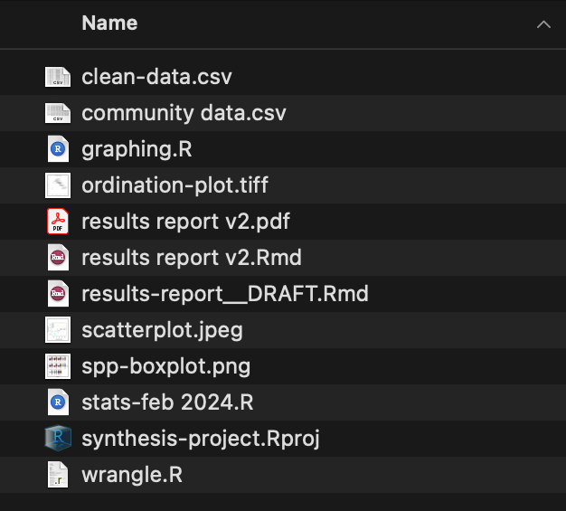
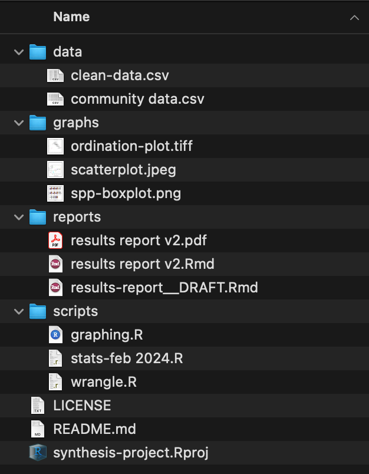
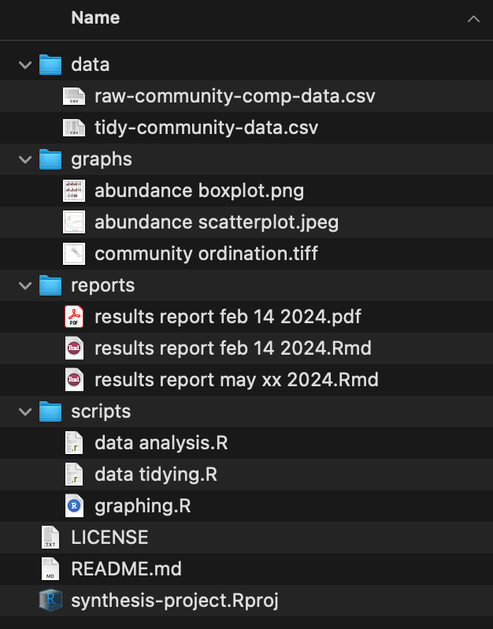
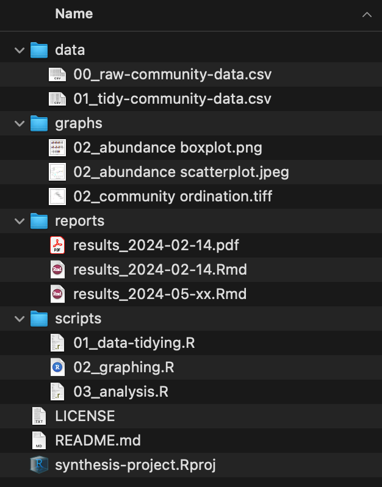

Organization, Documentation, & AI Assistance
[Overview Under Construction]
Check back later
Reproducibility Best Practices Summary
Making sure that your project is reproducible requires a handful of steps before you begin, some actions during the life of the project, and then a few finishing touches when the project nears its conclusion. The following diagram may prove helpful as a coarse roadmap for how these steps might be followed in a general project setting.

Lego Activity
Before we dive further into the world of reproducibility for synthesis projects, we thought it would be fun (and informative!) to begin with an activity that is a useful analogy for the importance of some of the concepts we’ll cover today. The LEGO activity was designed by Mary Donaldson and Matt Mahon at the University of Glasgow. The full materials can be accessed here.
Project Documentation & Organization
Much of the popular conversation around reproducibility centers on reproducibility as it pertains to code. That is definitely an important facet but before we write even a single line it is vital to consider project-wide reproducibility. “Perfect” code in a project that isn’t structured thoughtfully can still result in a project that isn’t reproducible. On the other hand, “bad” code can be made more intelligible when it is placed in a well-documented/organized project!
Documentation
Documenting a project can feel daunting but it is often not as hard as one might imagine and always well worth the effort! One simple practice you can adopt to dramatically improve the reproducibility of your project is to create a “README” file in the top-level of your project’s folder system. This file can be formatted however you’d like but generally READMEs should include:
- Project overview written in plain language
- Basic table of contents for the primary folders in your project folder
- Brief description of the file naming scheme you’ve adopted for this project.
Your project’s README becomes the ‘landing page’ for those navigating your repository and makes it easy for team members to know where documentation should go (in the README!). You may also choose to create a README file for some of the sub-folders of your project. This can be particularly valuable for your “data” folder(s) as it is an easy place to store data source/provenance information that might be overwhelming to include in the project-level README file.
Finally, you should choose a place to keep track of ideas, conversations, and decisions about the project. While you can take notes on these topics on a piece of paper, adopting a digital equivalent is often helpful because you can much more easily search a lengthy document when it is machine readable. We will discuss GitHub elsewhere in the course, but GitHub offers something called “issues” that can be a really effective place to record some of this information.
Project Organization
Fundamental Structure

The simplest way of beginning a reproducible project is adopting a good file organization system. There is no single “best” way of organizing your projects’ files as long as you are consistent. Consistency will make your system–whatever that consists of–understandable to others.
Here are some rules to keep in mind as you decide how to organize your project:
- Use one folder per project
Keeping all inputs, outputs, and documentation in a single folder makes it easier to collaborate and share all project materials. Also, most programming applications (RStudio, VS Code, etc.) work best when all needed files are in the same folder.
Note that how you define “project” may affect the number of folders you need! Some synthesis projects may separate data harmonization into its own project while for others that same effort might not warrant being considered as a separate project. Similarly, you may want to make a separate folder for each manuscript your group plans on writing so that the code for each paper is kept separate.
- Organize content with sub-folders
Putting files that share a purpose or source into logical sub-folders is a great idea! This makes it easy to figure out where to put new content and reduces the effort of documenting project organization. Don’t feel like you need to use an intricate web of sub-folders either! Just one level of sub-folders is enough for many projects.
- Craft informative file names
An ideal file name should give some information about the file’s contents, purpose, and relation to other project files. Some of that may be reinforced by folder names, but the file name itself should be inherently meaningful. This lets you change folder names without fear that files would also need to be re-named.
Naming Tips
We’ve brought up the importance of naming several times already but haven’t actually discussed the specifics of what makes a “good” name for a file or folder. Consider the adopting some (or all!) of the file name tips we outline below.
Names should be sorted by a computer and human in the same way
Computers sort files/folders alphabetically and numerically. Sorting alphabetically rarely matches the order scripts in a workflow should be run. If you add step numbers to the start of each file name the computer will sort the files in an order that makes sense for the project. You may also want to “zero pad” numbers so that all numbers have the same number of digits (e.g., “01” and “10” vs. “1” and “10”).
Names should avoid spaces and special characters
Spaces and special characters (e.g., é, ü, etc.) cause errors in some computers (particularly Windows operating systems). You can replace spaces with underscores or hyphens to increase machine readability. Avoid using special characters as much as possible. You should also be consistent about casing (i.e., lower vs. uppercase).
Names should use consistent delimiters
Delimiters are characters used to separate pieces of information in otherwise plain text. Underscores are a commonly used example of this. If a file/folder name has multiple pieces of information, you can separate these with a delimiter to make them more readable to people and machines. For example, you could name a folder “coral_reef_data” which would be more readable than “coralreefdata”.
You may also want to use multiple delimiters to indicate different things. For instance, you could use underscores to differentiate categories and then use hyphens instead of spaces between words.
Names should use “slugs” to connect inputs and outputs
Slugs are human-readable, unique pieces of file names that are shared between files and the outputs that they create. Maybe a script is named “02_tidy.R” and all of the data files it creates are named “02_…”. Weird or unlikely outputs are easily traced to the scripts that created them because of their shared slug.
Organizing Example
These tips are all worthwhile but they can feel a little abstract without a set of files firmly in mind. Let’s consider an example synthesis project where we incrementally change the project structure to follow increasing more of the guidelines we suggest above.

Positives
- All project files are in one folder
Areas for Improvement
- No use of sub-folders to divide logically-linked content
- File names lack key context (e.g., workflow order, inputs vs. outputs, etc.)
- Inconsistent use of delimiters

Positives
- Sub-folders used to divide content
- Project documentation included in top level (README and license files)
Areas for Improvement
- File names still inconsistent
- File names contain different information in different order
- Mixed use of delimiters
- Many file names include spaces

Positives
- Most file names contain context
- Standardized use of casing and–within sub-folder–consistent delimiters used
Areas for Improvement
- Workflow order “guessable” but not explicit
- Unclear which files are inputs / outputs (and of which scripts)

Positives
- Scripts include zero-padded numbers indicating order of operations
- Inputs / outputs share zero padded slug with source script
- Report file names machine sorted from least to most recent (top to bottom)
Areas for Improvement
- Depending on sub-folder complexity, could add sub-folder specific README files
- Graph file names still include spaces
Organization Recommendations
If you integrate any of the concepts we’ve covered above you will find the reproducibility and transparency of your project will greatly increase. However, if you’d like additional recommendations we’ve assembled a non-exhaustive set of additional “best practices” that you may find helpful.
Never Edit Raw Data
First and foremost, it is critical that you never edit the raw data directly. If you do need to edit the raw data, use a script to make all needed edits and save the output of that script as a separate file. Editing the raw data directly without a script or using a script but overwriting the raw data are both incredibly risky operations because your create a file that “looks” like the raw data (and is likely documented as such) but differs from what others would have if they downloaded the ‘real’ raw data personally.
Separate Raw and Processed Data
In the same vein as the previous best practice, we recommend that you separate the raw and processed data into separate folders. This will make it easier to avoid accidental edits to the raw data and will make it clear what data are created by your project’s scripts; even if you choose not to adopt a file naming convention that would make this clear.
Quarantine External Outputs
This can sound harsh, but it is often a good idea to “quarantine” outputs received from others until they can be carefully vetted. This is not at all to suggest that such contributions might be malicious! As you embrace more of the project organization recommendations we’ve described above outputs from others have more and more opportunities to diverge from the framework you establish. Quarantining inputs from others gives you a chance to rename files to be consistent with the rest of your project as well as make sure that the style and content of the code also match (e.g., use or exclusion of particular packages, comment frequency and content, etc.)
Responsibly Using Generative AI
What Do We Mean By “AI”?
Under construction
How You Can and Cannot Use AI
Under construction
Under construction
AI and the Environment, Intellectual Property, and Justice
Under construction